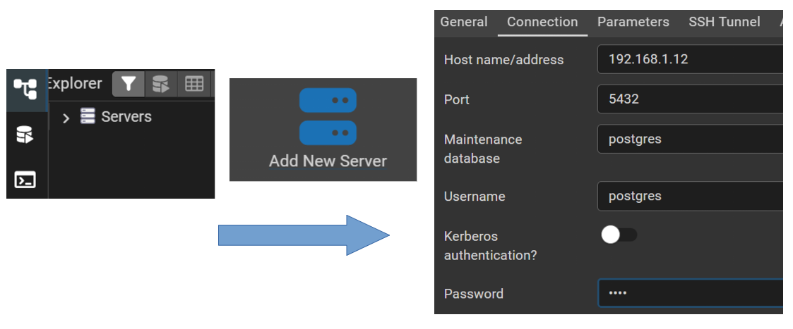

Instal·lació d'un SGBD
Definicions
Què és un DBA
La figura del DBA fa referència a la persona o a l’equip de persones responsables d’assegurar la disponibilitat de les dades d’una organització i l’accés a les mateixes de manera òptima. Serà el responsable de tot el cicle de vida del sistema d’informació.
Tasques d’un DBA
- Configurar el maquinari on s’instal·larà el SGBD
- Configurar el sistema operatiu
- Instal·lar i mantindre el SGBD
- Crear i configurar bases de dades
- Control d’usuaris i permisos
- Gestió de la seguretat
- Monitorar i optimitzar el rendiment de les bases de dades
- Realitzar tasques de còpies de seguretat i recuperació
Què és un SGBD
Un SGBD és un conjunt de programes que permeten l’emmagatzematge, modificació i extracció de la informació d’una base de dades, a més de proporcionar ferramentes per a explotar, administrar i gestionar les bases de dades.
En anglés DBMS o RDBMS (Data Base Management System).
Ranking DBMS: https://db-engines.com/en/ranking
Contesta a les preguntes ...
- Quants SGBD hi ha al rànquing
- Dels 5 primers, quants són de codi obert
- Els dos primers, a quina empresa pertanyen
- Dels 7 primers, quins sistemes operatius suporten (fes una graella o taula)
- Dels 7 primers, quins models de dades suporten (fes una graella o taula)
Classificacions dels SGBD
Les classificacions dels Sistemes de Gestió de Bases de Dades (SGBD) poden organitzar-se en diverses categories segons la seua arquitectura, nombre d’usuaris, model de dades i el seu propòsit o tipus de càrrega de treball.
1. Segons el nombre d’usuaris
- Monousuari
- Dissenyats per a ser utilitzats per un únic usuari alhora.
- Exemple: Microsoft Access (en entorns personals o d’escriptori).
- Multiusuari
- Permeten que múltiples usuaris accedisquen i treballen simultàniament amb la base de dades.
- Controlen l’accés concurrent i la integritat de les dades.
- Exemples: MySQL, PostgreSQL, Oracle Database, SQL Server.
2. Segons la seua arquitectura
- Centralitzats
- Tota la base de dades s’emmagatzema i gestiona en un únic servidor.
- Els usuaris accedeixen al SGBD a través d’una xarxa, però tot el processament ocorre al servidor central.
- Més fàcils de mantindre, però poden ser un coll de botella i un punt únic de fallada.
- Distribuïts
- La base de dades està repartida en múltiples nodes (servidors).
- Les dades poden estar replicades o fragmentades entre diferents ubicacions.
- Més complexos, però ofereixen major disponibilitat i escalabilitat.
3. Segons el model de dades (o tipus de base de dades)
Aquests SGBD es classifiquen segons la forma en què estructuren i accedeixen a les dades:
- Relacionals
- Basats en taules amb files i columnes.
- Estructura fixa (esquema definit).
- Usen SQL.
- Exemples: MySQL, PostgreSQL, Oracle.
- Documentals
- Emmagatzemen dades en forma de documents (normalment JSON, BSON, etc.).
- Flexibles, ideals per a dades semi-estructurades.
- Exemples: MongoDB, CouchDB. Són part de NoSQL.
- De grafs
- Optimitzats per a representar relacions complexes entre dades.
- Les dades s’emmagatzemen com a nodes i arestes.
- Exemples: Neo4j, ArangoDB. També considerats NoSQL.
- In-memory
- Emmagatzemen les dades directament en la memòria RAM per a màxima velocitat.
- Usats en temps real, memòries cau o aplicacions crítiques.
- Exemples: Redis, SAP HANA.
- De sèries temporals
- Especialitzats en gestionar dades amb marques temporals (mètriques, logs, sensors).
- Optimitzats per a inserir, consultar i analitzar dades cronològiques.
- Exemples: InfluxDB, TimescaleDB.
- Espacials
- Dissenyats per a emmagatzemar i consultar dades geogràfiques i geomètriques.
- Suporten operacions com intersecció de polígons, distàncies, coordenades.
- Exemples: PostGIS (extensió de PostgreSQL), Oracle Spatial, MongoDB (suport geoespacial).
- Altres models clàssics
- Navegacionals: Organitzats en arbres o xarxes jeràrquiques.
- Orientats a objectes: Emmagatzemen objectes complets.
Notes importants:
- Alguns SGBD combinen múltiples models (per exemple, ArangoDB combina grafs, documents i claus-valor).
- Molts motors relacionals moderns ofereixen extensions per a models no relacionals, com PostgreSQL amb PostGIS (espacial) o TimescaleDB (sèries temporals).
4. Segons el propòsit o tipus de càrrega de treball
- OLTP (Online Transaction Processing) – Transaccionals
- Dissenyats per a gestionar moltes transaccions ràpides i concurrents.
- Usats en sistemes operacionals: vendes, bancs, reserves, etc.
- Requereixen alta integritat, concurrència i recuperació davant fallades.
- Exemples: MySQL, PostgreSQL, Oracle, SQL Server.
- OLAP (Online Analytical Processing) – Analítics / Data Warehouse
- Optimitzats per a consultes complexes i anàlisi de grans volums de dades.
- Suporten operacions com agregació, slicing, dicing, drill-down.
- Usats en intel·ligència de negoci, informes, dashboards.
- Exemples: Amazon Redshift, Snowflake, Google BigQuery, Microsoft Synapse, Teradata.
Alguns SGBD moderns (com PostgreSQL o SQL Server) poden realitzar funcions OLTP i OLAP híbrides, encara que no tan especialitzades com les eines pures.
Tipus de connexió a una Base de Dades
1. Des de consola (CLI - Command Line Interface)
- In situ
- Connexió local, des del mateix equip on està la base de dades.
- Exemples:
sqlplus usuari/pass@host/nombasedadesmysql -u usuari -p
psql -U usuari -d basedades
- Per SSH (Secure Shell)
- Connexió remota i segura a través d’un túnel SSH al servidor on està la BD.
- Útil per a mantindre la seguretat en entorns productius.
- Exemples:
ssh usuari@servidor
mysql -u usuari -p
2. Des d’un entorn gràfic (GUI - Graphical User Interface)
Ferramentes visuals que permeten gestionar bases de dades de manera amigable:
- Interfície intuïtiva, ideal per a usuaris no tècnics o per a tasques ràpides.
- Exemples:
- pgadmin
- DBeaver
- phpMyAdmin
3. Des d’un llenguatge de programació (via driver o API)
Connexió programada des d’una aplicació o script.
- PDO (PHP Data Objects)
- Abstracció d’accés a base de dades en PHP.
- Suporta múltiples motors (MySQL, SQLite, PostgreSQL, etc.).
- Exemple:
$pdo = new PDO("mysql:host=localhost;dbname=mi_bd", "usuari", "contrasenya");
- Altres drivers per llenguatge
- JDBC (Java)
- ODBC (multiplataforma)
- psycopg2 (Python per a PostgreSQL)
- SQLAlchemy (ORM per a Python)
- etc...
Funcions d’un SGBD
- DDL (Data Definition Language):
CREATE,ALTER,DROP,TRUNCATE,COMMENT,RENAME - DML (Data Manipulation Language):
INSERT,DELETE,UPDATE,SELECT
↳ DQL (Data Query Language):SELECT - DCL (Data Control Language):
GRANT,REVOKE - TCL (Transaction Control Language):
COMMIT,ROLLBACK,SAVEPOINT - Integritat referencial: Garantir la coherència entre taules relacionades (claus foranes, dependències, etc.).
- Auditoria: Registrar qui accedeix o modifica dades, i quan ho fa.
- Temps de resposta idoni: Proporcionar respostes ràpides i eficients a consultes i operacions.
- Independència física i lògica: Separar la manera com es veuen les dades de com estan emmagatzemades internament.
- Monitoratge del SGBD: Supervisar el rendiment, ús de recursos, sessions, etc.
- Connectivitat: Permetre accés des de diferents aplicacions, sistemes operatius i ubicacions.
- Còpia i recuperació: Fer còpies de seguretat i restaurar-les en cas de fallada o pèrdua de dades.
Elements d’un SGBD
Un Sistema Gestor de Bases de Dades (SGBD) està compost per diversos elements o components que treballen conjuntament per facilitar l’emmagatzematge, recuperació, manipulació i administració de dades.
1. Processador de consultes
És el component encarregat d’interpretar i executar les consultes realitzades pels usuaris (normalment en SQL). Les seues funcions inclouen:
- Anàlisi lèxica i sintàctica de les consultes.
- Optimització de consultes per millorar-ne el rendiment.
- Generació del pla d’execució.
2. Gestor de la base de dades
És el nucli del SGBD. Controla l’accés a les dades i garanteix la seua integritat, seguretat i concurrència. Les seues responsabilitats són:
- Control de transaccions.
- Gestió de la concurrència (accés simultani).
- Recuperació davant de fallades.
- Control d’integritat.
3. Gestor d’arxius
Aquest component administra l’emmagatzematge físic de les dades en disc. Entre les seues funcions estan:
- Lectura i escriptura de blocs de dades.
- Organització i emmagatzematge eficient.
- Manteniment d’índexs i estructures d’emmagatzematge.
4. Interfícies externes
Són els mecanismes que permeten als usuaris i aplicacions comunicar-se amb el SGBD. Poden incloure:
- Interfícies gràfiques (GUI).
- Interfícies de programació (API).
- Consoles de comandes.
- Connectors per a llenguatges de programació.
5. Preprocessador del llenguatge de manipulació de dades (DML)
Aquest component s’encarrega d’identificar les sentències DML (com SELECT, INSERT, UPDATE, DELETE) dins del codi font d’una aplicació. Funcions clau:
- Integrar sentències DML en llenguatges com C, Java, etc.
- Traduir-les a crides al processador de consultes del SGBD.
6. Compilador del llenguatge de definició de dades (DDL)
Traduïx les sentències DDL (com CREATE, ALTER, DROP) que definixen l’estructura de la base de dades. La seua funció és:
- Processar les definicions d’esquemes, taules, índexs, vistes, etc.
- Actualitzar el diccionari de dades amb aquesta informació.
7. Gestor del diccionari
El diccionari (o catàleg) de dades és una base de dades interna que emmagatzema metadades. Aquest gestor:
- Administra el diccionari de dades.
- Proporciona informació sobre les estructures, restriccions, usuaris i permisos.
- És consultat per quasi tots els altres components del SGBD.
Com seleccionar un SGBD
Una vegada es coneixen els elements d’un SGBD, els tipus de SGBD i els conceptes clau, ja s’està en posició de poder triar un SGBD tenint en compte els factors que determinaran l’elecció.
Factors per a l’elecció del SGBD
- Tipus de dades a tractar
- Volum de dades
- Nombre d’usuaris i necessitat de concurrència
- Tipus de consultes
- Cost (compra i manteniment), llicències
- Velocitat de lectura/escriptura
- Arquitectura i connectivitat (escalabilitat)
- Recursos i política de l’empresa
- Seguretat (compliment normatiu – compliance)
- Requisits del sistema
- Integració amb altres aplicacions
- APIs
- Migració de dades
- Tipologia de la base de dades (relacional, NoSQL, etc.)
- Experiència de l’equip (comunitat, documentació disponible)
- Suport tècnic
- Actualitzacions del producte
Documentació
En cada instal·lació s’haurà d’elaborar o omplir una documentació amb la informació següent. Aquesta documentació no serà pública i es guardarà per a consultes tècniques.
- Nom i contacte de la persona instal·ladora
- Data de la instal·lació
- Màquina, IP, DNS, port(s)
- Característiques de la màquina
- Com accedir a la màquina (física, virtual, núvol)
- Sistema Operatiu / versió
- Usuari administrador del sistema operatiu
- Usuari que realitza la instal·lació
- Producte i versió utilitzada del SGBD
- Llocs/carpetes on s’instal·la el producte
- Llocs/carpetes on s’instal·la la base de dades
- Llocs/carpetes on estan els fitxers rellevants
- Noms de les bases de dades (CDB, PDBs, ...)
- ... i qualsevol altra informació que es considere rellevant
Verificar els requisits d’instal·lació
En cada SGBD hi haurà uns requisits que podem trobar en la documentació de cada versió del producte concret ... ORACLE, PostgreSQL, MySQL, etc.
Abans de començar la instal·lació, cal aconseguir i tindre disponibles aquests documents!
Verificar:
- Requisits de hardware
- Kernel del sistema operatiu adequat
- Comunicacions
- Espai lliure (memòria i emmagatzematge)
- Existència de paquets i versions
- Variables d’entorn
- Usuaris
Registre de la instal·lació (log de la instal·lació)
Tots els instal·ladors de sistemes gestors de bases de dades guarden un registre de les operacions realitzades durant la instal·lació. Aquest registre és útil en cas que es produeixi algun problema, per a diagnosticar-ne el motiu.
L’estructura i ubicació del registre de la instal·lació dependrà del SGBD.
El DBA deu tindre localitzat este registre per poder consultar-lo en qualsevol moment i trobar incidències en cas d'haver-se produït
Versions de PostgreSQL
🧾 Què és una versió?
La versió referència a la numeració del programari que indica les funcionalitats disponibles, el motor de base de dades i el model d’arquitectura utilitzat.
Exemples: 9.6, 10, 11, 15, 16
Estes són les versions majors. Cada versió: Introdueix canvis importants, Té 5 anys de support oficial, Requereix de dump/restore per actualitzar
Hi ha versions menors. Exemple 15.2 → 15.3 . Estes versions: Correcció de bugs, actualitzacions de seguretat, No trenquen compatibilitat, S'actualitzen facilment.
⚠️ Consideracions importants
- També es molt important tindre en consideració el fi de suport d'una versió (EOL, End of Life)
El Fi de vida útil, més conegut pel seu terme anglès End Of Life (EOL), és un terme que fa referència a la caducitat d'un producte de programari. És a dir, és el moment en què un programari deixa de tenir manteniment i suport.
Edicions de Postgresql
Postgres NO TÉ EDICIONS, tipus Enterprise, Standard, etc, com fa ORACLE..
En Postgress sempre és el mateix motor, sense funcions “capades” per llicència.
- El que si que canvia, és:
- Extensions:(PostGIS, pg_stat_statements, etc.)
- Distribucions:(EnterpriseDB, Amazon RDS, Azure, etc.)
- Configuració i suport comercial
(Practica 🧪) Primer contacte amb Postgresql
Requisits d’instal·lació
- Sistema Operatiu
- GNU/Linux (Ubuntu, Debian, Red Hat, CentOS, AlmaLinux, etc.)
- Windows
- macOS
- Sistemes Unix (FreeBSD, OpenBSD…)
- Maquinari mínims
- CPU: 1 nucli
- Memòria RAM: 1 GB (2 GB o més recomanat)
- Disc dur: Uns 100 MB per al programari. Espai addicional segons les dades i còpies de seguretat
- Programari necessari
- En Linux, gestor de paquets (apt, dnf, yum, etc.)
- Permisos d’administrador (root o sudo) per a la instal·lació
- PostgreSQL crea un usuari propi del sistema:
postgres - Connexió a xarxa si: Hi haurà connexions remotes, El servidor no serà només local
- Port disponible: Port per defecte: 5432
- Requisits recomanats per a producció
- 4–8 GB de RAM o més
- Disc SSD
- Sistema de còpies de seguretat
- Connexions xifrades (SSL)
- Tallafocs configurat
Clúster PostgreSQL (equivalent a una instància)
- Un clúster PostgreSQL és:
- Un conjunt de:Bases de dades, Usuaris (rols), Configuració
- Gestionat per un sol procés servidor (postmaster / postgres)
- Amb un únic port (normalment 5432)
- Un únic directori de dades
Si es necessita NO compartir Usuaris, extensions o configuració: (Si es vol un altre “entorn”: Es crearà un altre clúster (altre port / altre directori))
En PostgreSQL, la memòria i els paràmetres principals es veuen i es gestionen sobretot mitjançant paràmetres de configuració
Es poden consultar amb les següents ordres
SHOW config_file;
SHOW shared_buffers;
SHOW work_mem;
SHOW max_connections;
Arquitectura de Postgresql
L’arquitectura de PostgreSQL és client–servidor i basada en processos (no en fils com altres SGBD).
Client │ ▼ postmaster (procés principal) │ ├─ Procés backend (1 per connexió) ├─ Procés autovacuum ├─ Procés WAL writer ├─ Procés checkpointer ├─ Procés background writer └─ Procés stats collector
Cada connexió = un procés.
Estructura recomanada
📁 Binaris - /usr/pgsql-16/bin
📁 Dades (DATA DIRECTORY) - /pgdata/cluster01/data
(Conté: bases de dades , WAL, catàlegs, configuració)
📁 WAL separat (molt recomanat) - /pgdata/cluster01/wal
Configurat amb: initdb --waldir=/pgdata/cluster01/wal
📁 Tablespaces (com datafiles) - /pgdata/tablespaces/ts_dades
/pgdata/tablespaces/ts_indexos
Exemple: CREATE TABLESPACE ts_dades LOCATION '/pgdata/tablespaces/ts_dades';
📁 Logs - /pglogs/cluster01
📁 Backups - /pgbackups/cluster01
⚠️ 👁️ Si pot ser , en altre disc físic, o altra ubicació
🐘 Instal·lació de PostgreSQL
📌 PostgreSQL és lliure i gratuït.Es pot trobar més informació en la pàgina oficial PostgreSQL/Downloads
Instal·lació en GNU/Linux (la més habitual)
Instal·lació amb gestor de paquetssudo apt update sudo apt install postgresql postgresql-contrib
Açò instal·la: El servidor PostgreSQL, Eines bàsiques, Extensions comunes
Durant la instal·lació: Es crea l’usuari del sistema: postgres , Es crea un clúster per defecte, El servei s’inicia, Escolta pel port 5432
Comprovar que el servidor / servei funciona
sudo systemctl status postgresql
Entrar en PostgreSQL. Amb client psql
sudo -u postgres psql
Eixir de psql
\q
🧰 Eines bàsiques de PostgreSQL
psqlClient de línia de comandes. Serveix per connectar-te al servidor PostgreSQL, Executar consultes SQL, Administrar bases de dades i rolscreatedb / dropdbCrear i eliminar bases de dades des de la terminal-
createuser / dropuserCrear i eliminar usuaris (rols) -
pg_dumpFer còpies de seguretat (backups) pg_restoreRestaurar còpies fetes amb pg_dump en format no-textpg_isready / pg_ctl
Extensions comunes
- uuid-ossp (UUIDs)
- pg_trgm (cerques similars)
- hstore (clau-valor en una columna)
- citext (sense diferenciar may-min)
- tablefunc (pivotar dades)
- unaccent (eliminar accents)
S’activen dins la base de dades, no al sistema:
CREATE EXTENSION pg_trgm;
Instal·lació en Windows
Instal·lador gràfic
Instal·lació en macOS
Instal·lador oficial, Homebrew
brew install postgresql brew services start postgresql
Abans de continuar....
Realitzem la nostra primera instal·lació de POSTGRES
En altra màquina....
Instal·lació de client gràfic => pdadmin
Des de la pàgina oficial de pgadmin
Accés a Postgresql
Després de tindre acabada la instal·lació, hem de comprovar que es pot accedir al cluster.
Des d'una terminal
sudo -u postgres psql
Esta ordre ens connecta al cluster principal...
Configuració bàsica després d’instal·lar
Canviar contrasenya de postgres 🗝️ALTER USER postgres WITH PASSWORD 'nova_contrasenya';
Permetre connexions remotes (opcional)
Editar: postgresql.confSELECT pg_reload_conf();
Crear BBDD i usuari
CREATE USER alumne WITH PASSWORD '1234'; CREATE DATABASE bd_examen OWNER alumne;
Arrancar i parar BBDD
sudo systemctl start postgresql sudo systemctl stop postgresql sudo systemctl restart postgresql
Connexió incial
Per defecte, (i sinó s'indica altra cosa) PostgreSQL es connecta a una base de dades amb el mateix nom que l’usuari.
Quan fas: psql : PostgreSQL intenta:
Usuari = usuari del sistema, Base de dades = mateix nom que l’usuari
Si la BD no existeix, S'obtindrà un error:
FATAL: database "nom_usuari" does not exist
Després d’instal·lar PostgreSQL, hi ha sempre: postgres template0 template1
Connexió implícita
psql -U alumne -d bd_examen
Explorar cluster
Una vegada connectats… com veure les altres BBDD en PostgreSQL
\l \list \l+ SELECT datname FROM pg_database;
Com saber a quina bbdd estem connectats… SELECT current_database(); o \conninfo o Normalment el prompt mostra la base de dades: testdb=#
I per canviar (connectar) a una altra BBDD
\c nom_bbdd \connect nom_bbdd
Altres maneres d'accedir a la instància:
- Utilitzant pgadmin
- Utilitzant Visual Studio Code + Extensió PostgreSQL O DBCode
- Utilitzant DBeaver ( multi-SGBD sw lliure)
- Utilitzant TOAD (multi-SGBD propietari)
PgAdmin

Per accedir a una instància de postgresql es necessita:
- IP o url
- port
- usuari / password
🎓 Amb tots aquests coneixements, ja estàs preparat/ada per començar la unitat dos. Configuració d'un SGBD
Instal·lar més d'una instància en una mateixa màquina
Directoris de dades separats
Cada instància necessita el seu PGDATA, és a dir, el directori on es guarden les dades, logs i configuracions.
# Instància 1 mkdir -p /var/lib/postgresql/instance1 # Instància 2 mkdir -p /var/lib/postgresql/instance2
Ports separats
PostgreSQL per defecte usa el port 5432. La segona instància ha de tenir un altre port, per exemple 5433.
# Al postgresql.conf de la segona instància port = 5433
Configuració independent
Cada instància té els seus fitxers:
- postgresql.conf → configuració principal
- pg_hba.conf → autenticació i permisos
- pg_ident.conf → mapatge d’usuaris
Inicialitzar la/les base de dades
# Instància 1 initdb -D /var/lib/postgresql/instance1 # Instància 2 initdb -D /var/lib/postgresql/instance2
Executar instàncies separades
Opció A: com a serveis separats (Linux)
Crea serveis systemd independents apuntant a cada PGDATA i port.# Exemples pg_ctl -D /var/lib/postgresql/instance1 -l logfile1 start pg_ctl -D /var/lib/postgresql/instance2 -l logfile2 start
Opció B: manual amb diferents ports
postgres -D /var/lib/postgresql/instance1 -p 5432 & postgres -D /var/lib/postgresql/instance2 -p 5433 &
Connexió a cada instància
psql -h localhost -p 5432 -U usuari -d db1 # instància 1 psql -h localhost -p 5433 -U usuari -d db2 # instància 2